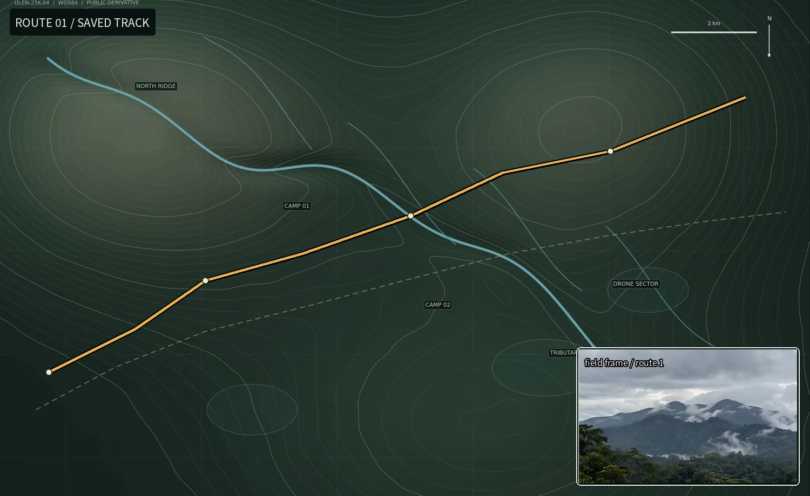

南岭雨季训练
22.6 km · +1080 m · 预计 5h 40m · 最近更新 2026-08-14

路线说明
泥坡、浅滩和两个固定撤离点。 周野把这类路线主要当作雨季体能和判断训练，因此备注里常见撤离点、补水和“什么时候应该回头”，而不是景点介绍。
最近记录
最近一次完成没有严重事故，两个泥坡在连续降雨后需要绕行。社区用户补充了几条小型落石和树倒信息，路线本身仍按原方向开放。
22.6 km · +1080 m · 预计 5h 40m · 最近更新 2026-08-14

泥坡、浅滩和两个固定撤离点。 周野把这类路线主要当作雨季体能和判断训练，因此备注里常见撤离点、补水和“什么时候应该回头”，而不是景点介绍。
最近一次完成没有严重事故，两个泥坡在连续降雨后需要绕行。社区用户补充了几条小型落石和树倒信息，路线本身仍按原方向开放。